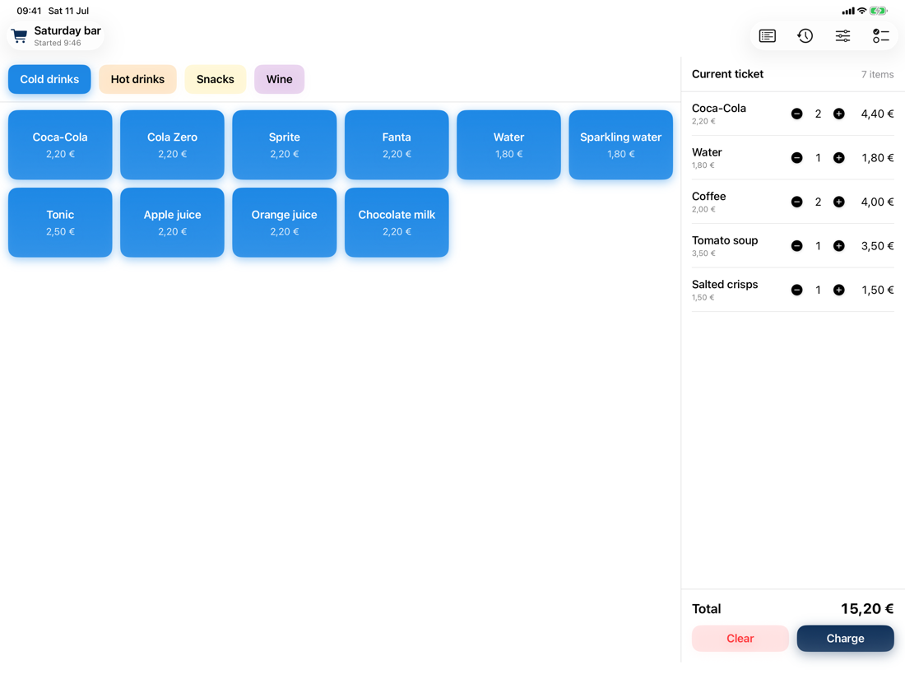
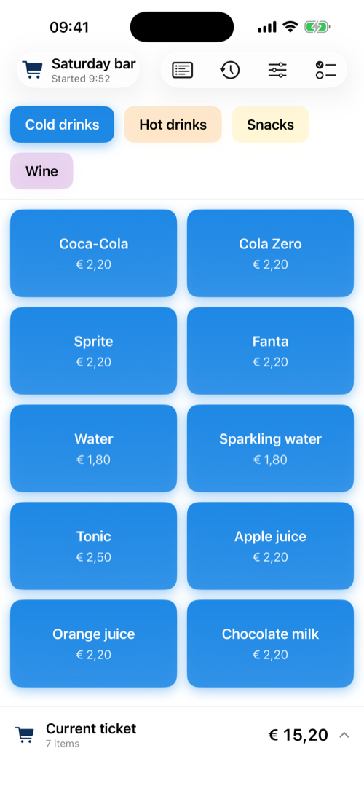
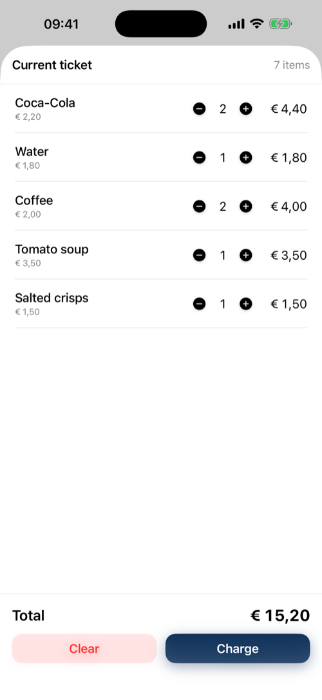
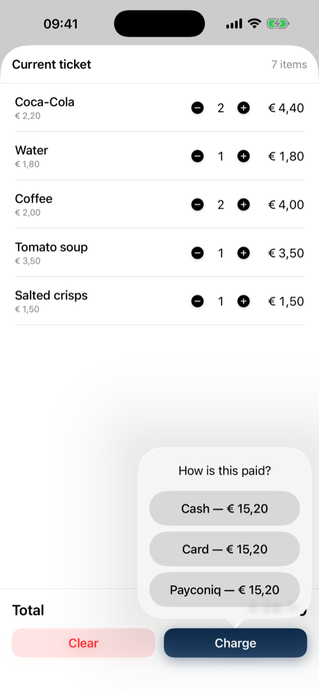
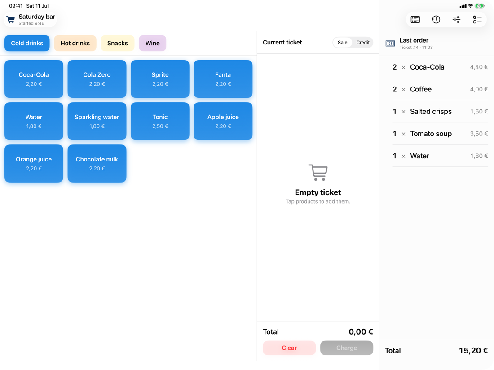
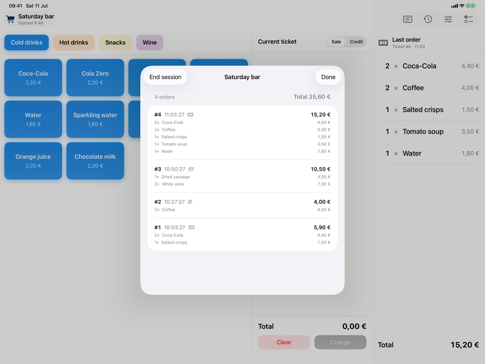
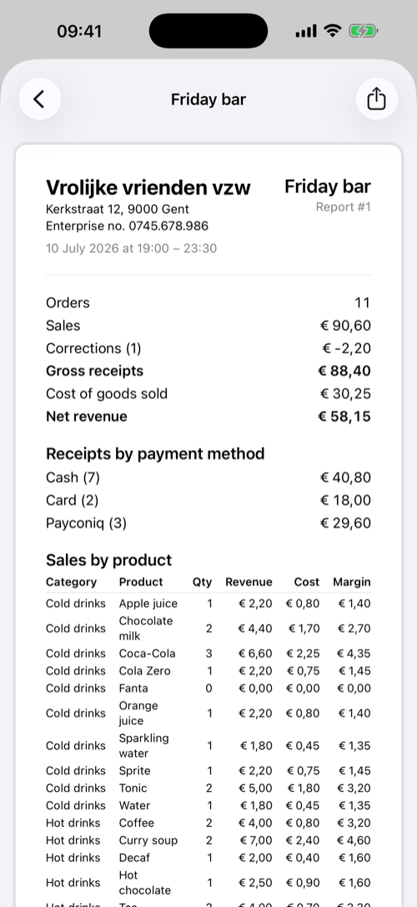
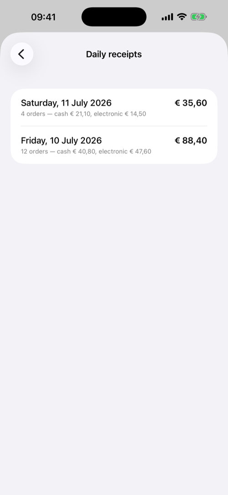
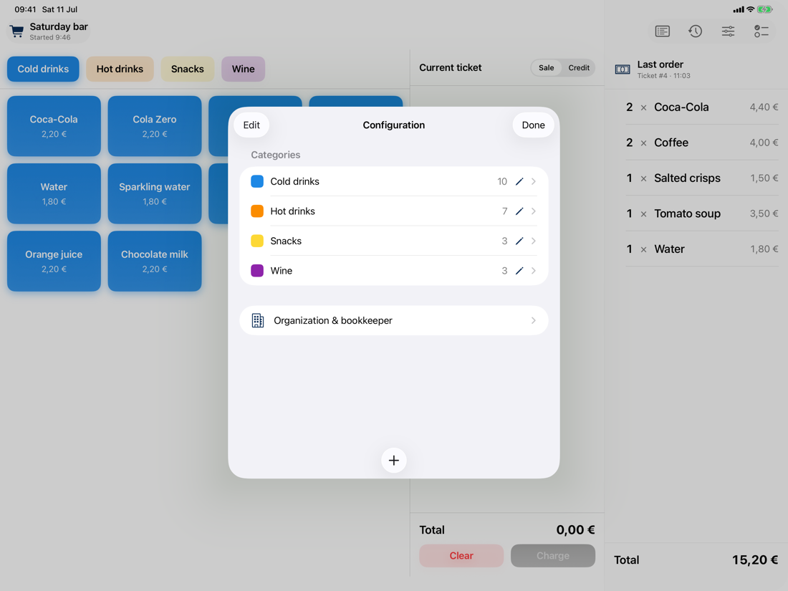

Point of Sales
A simple cash register for small club bars, on iPhone and iPad.
About
Point of Sales is a lightweight point-of-sale app for small clubs and non-profits where orders are taken at the bar on a single device. Open a session, tap products to build a ticket, charge, and close the session at the end of the night to get a numbered sales report you can share as PDF or CSV.
- Sessions — open a session to start recording sales, close it when you're done.
- Cart-style ordering — tap products to build a multi-item ticket, then charge.
- Categories & products — configured in-app, with a colour per category.
- Session reports — numbered end-of-session reports, exportable as PDF or CSV.
Features
The register
Colour-coded categories, big tappable product buttons, and the running ticket always in view. On iPhone the ticket lives in a bottom bar that opens into a full cart.



Charging an order
Charge with one tap per payment method — cash, card, or Payconiq. Cash totals are rounded to 5 cents the way Belgian law requires, and the announced amount is right on the button.

Serving what was just sold
After charging, the order stays visible in a glanceable panel so you can prepare and serve it while the register is free for the next client.

A full audit trail
Every ticket gets a number. Mistakes are never deleted: orders can be voided with a reason, and refunds are recorded as credit tickets linked to the original order.

Reports for the bookkeeper
Closing a session produces a numbered report with receipts per payment method, sales and margin per product, credits, and voided orders — ready to email to your bookkeeper as PDF and CSV. The daily receipts view sums everything per calendar day with the cash/electronic split for the daily receipts book.


Simple to set up
Categories and products are managed in the app: give each category a colour, set prices and optional cost prices for net-revenue reporting, and hide products from the register without losing their history. The app is available in English and Dutch.

Support
Questions, problems, or feature requests? Get in touch by email and you'll get a reply as soon as possible:
Privacy
All data stays on your device. The app collects nothing and sends nothing anywhere. Read the full privacy policy.